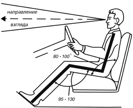
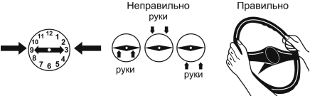
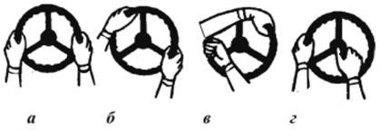
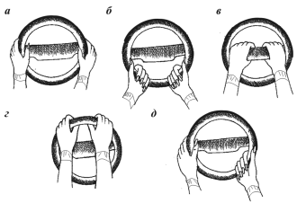
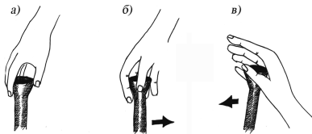

Технические аспекты безопасного управления.
Ознакомившись с устройством автомобиля. Теперь проследим за действиями, с помощью которых водитель управляет им. Для новичков этот раздел даст необходимые знания и опыт, квалифицированным водителям совершенствовать свое мастерство технически грамотного и безопасного управления автомобилем.
Как правильно сидеть за рулем. Приемы руленияДля того чтобы комфортно чувствовать себя во время движения и меньше уставать, необходимо правильно сидеть за рулем автомобиля, поэтому прежде чем оказаться на дороге, посмотрите, правильно ли вы держите руль. Так, если при движении автомобиля водитель сидит правильно, он может, не отрывая спины от спинки сиденья, без напряжения держать левой рукой рулевое колесо в его верхней точке и одновременно правой рукой включить третью передачу.
Поэтому, прежде чем сесть за руль, необходимо правильно подготовить свое место – кресло водителя. В инструкции подробно говорится о том, как регулируется кресло. Однако здесь речь идет не об удобстве в обычном понимании, а о создании наиболее благоприятных условий для управления отдельными рычагами и приборами, о том, как обеспечить хороший обзор дороги, и быстрое реагирование на окружающую обстановку.

Рис. 5. Правильное положение тела за рулем
Для того чтобы создать оптимальные условия для удобного управления автомобилем не так просто, в зависимости от роста и телосложения водителя необходимо, чтобы конструкция автомобиля позволяла перемещать кресло вперед и назад, поднимать и опускать его, менять наклон спинки, менять положение рулевого колеса на оси (выдвигать с закреплением в разных положениях). Выбирая наиболее удобное для себя положение, следует руководствоваться такими правилами: сидеть за рулем следует прямо, опираясь на сиденье спиной, поясницей и ногами; взгляд должен быть направлен вперед и вдаль. Обратите внимание на положение головы и туловища. Правильным положением тела водителя за рулем можно считать такое, когда его бедренная кость и позвоночник образуют угол 80–100°, верхняя часть тела наклонена назад на 25°, руки слега согнуты в локтях, а ноги – в коленях под углом 95–130° (рис. 5). Центр тяжести должен находиться на сиденье, а не на педалях и рулевом колесе. В этом случае мышцы не напряжены. По мнению специалистов, такая поза позволяет дольше сохранять внимание в сложной дорожной обстановке. Именно в этом положении следует отрегулировать ремень безопасности. При правильно отрегулированном ремне безопасности кисть руки должна туго входить под него на уровне груди. Подголовник следует установить таким образом, чтобы он препятствовал движению головы назад и в его среднюю часть упирался затылок. Заняв место на сиденье, следует убедиться, что ноги свободно стоят на педалях, их не нужно вытягивать и сгибать в коленях, спина удобно опирается на спинку, руки на рулевом колесе слегка согнуты в локтях и расположены симметрично в положении, которое соответствует расположению стрелок на циферблате часов в зоне от 2 до 3 ч, – правая рука, от 9 до 10 ч – левая (рис. 6). Такое положение рук позволяет прочно удерживать рулевое колесо и при необходимости быстро повернуть его без дополнительного перехвата рук почти на 180°. Чтобы руки не уставали, не следует сильно сжимать обод колеса, через 5–10 мин нужно менять их положение на «без десяти два», «без десяти четыре».

Рис. 6. Положение рук на руле
Правильная посадка за рулем определяет и положение ног, которые должны быть расположены рядом с педалями без напряжения. Для достижения устойчивости каблуком опираются на пол. Левой ногой нажимают на педаль сцепления, правой – на педали управления подачей топлива и тормоза. Левая ступня обычно располагается левее педали сцепления или на полу перед ней, правая – почти напротив педали тормоза с опорой на каблук.
Во время движения дорожные условия диктуют различные приемы поворота рулевого колеса – руление. Различают три вида руления: выравнивающее– поворот руля производится на небольшой угол для компенсации прямолинейного движения; компенсаторное руление, с помощью которого ликвидируются заносы; основное – руление на поворотах.
Рулевые колеса объединяет одна общая черта – все они круглые. Различаются они, как правило, расположением спиц и материалом, из которого сделаны. Спицы служат для соединения рулевого колеса с рулевым валом, а не для того чтобы с их помощью управлять. Лучше всего рулевое колесо держать таким образом, чтобы, не перехватывая, сделать как можно больший поворот. Если же водитель держит рулевое колесо за спицы, то его придется перехватывать уже в самом начале поворота. Как раз на повороте руки на руле могут так запутаться, что, когда направление движения автомобиля нужно будет выравнивать, водитель не сможет повернуть, не перехватив руками вновь. Положение рук, показанное на рисунке 7а, позволяет проехать крутой поворот, не перехватывая руль руками. Если нужно круто повернуть налево, придется снять с обода левую руку, перенести ее в верхнюю часть руля (рис. 7б), а правую пока оставить на месте. На серпантинах с особо крутыми поворотами этого движения недостаточно и плавный поворот здесь может быть достигнут двумя способами. Если у автомобиля управление легкое, следует перехватить руль сразу перед поворотом (влево), как в предыдущем положении, и поворачивать одной правой рукой, левая остается на том же месте и обод проскальзывает между пальцами. В тот момент, когда правая рука уже не может больше повернуть руль, поворот продолжает левая, а правая свободно пропускает обод.
На рисунке 7в продемонстрирован другой способ, при котором еще до поворота, пока автомобиль движется прямо, последовательно нужно перехватить руль обеими руками, как показано на рисунке. К концу поворота руки примут исходное положение. Эти способы имеют различные варианты, применение которых зависит от угла поворота и скорости. Если вы научитесь делать их сразу правильно и обдуманно, то затем будете выполнять автоматически, что явится предпосылкой для хорошей водительской техники. В правилах о том, как держать руль, имеется исключение: при интенсивном движении там, где часто приходится пользоваться звуковым сигналом, следует держать руль, как указано на рисунке 7 г. Левой рукой нужно управлять, как обычно, правая лежит на спице, доставая большим пальцем до кнопки сигнала и одновременно помогая левой руке в управлении.

Рис. 7. Различные положения рук на руле
На практике начинающий водитель очень быстро убеждается, что автомобиль с исправным управлением сам стремится сохранять направление движения по прямой. В этом легко убедиться, если, сделав крутой поворот, дать рулю возможность легко скользнуть в руках – колеса сами возвратятся в начальное положение. Во время движения не следует постоянно теребить руль – это не только не нужно, но и вредит плавности движения автомобиля. Чуть заметное выравнивание необходимо лишь изредка и начинающий водитель вскоре будет его совершать совершенно автоматически, выравнивая машину, когда это действительно нужно. При правильном рулении скорость поворота рулевого колеса должна соизмеряться со скоростью движения автомобиля, его загрузкой и состоянием дороги.
Начинающему водителю следует выработать такой стиль управления автомобилем, который позволит перемещаться по проезжей части плавно, не мешая другим. Руль необходимо поворачивать также плавно, словно при езде по скользкому покрытию. Такой режим не вызывает неприятных ощущений у пассажиров, дольше сохраняет шины и узлы ходовой части и, самое главное, обеспечивает безопасность.
При движении, как правило, руль следует держать обеими руками, но нужно научиться вести автомобиль и одной рукой. Управление одной рукой допускается только во время движения задним ходом, при переключении передач, пользовании звуковым сигналом, включении и выключении освещения и стеклоочистителя.
Во время прикуривания от электрического прикуривателя, у некоторых начинающих водителей рука, держащая руль, поворачивает автомобиль в сторону. Это довольно опасно, особенно ночью: пламя зажигалки может ослепить глаза.
При формировании правильных и рациональных навыков безопасной езды начинающему водителю следует уделять технике управления рулевым колесом особое внимание, это поможет избежать опасных ошибок в критических дорожно-транспортных ситуациях. К ним относятся: открытый обхват рулевого колеса (рис. 8а), когда большие пальцы рук располагаются снаружи и нет возможности блокировать внезапное вращение руля, вызванное реакцией дороги, особенно при движении по песку, колее, при наезде на небольшое препятствие; обхват в нижнем или верхнем секторе (рис. 8б, 8 г), что уменьшает точность руления, угол и скорость поворота; обхват и поворот рулевого колеса за спицы (рис. 8в) и сильное перекрещивание руки не позволяют повернуть руль на больший угол; руление с перехватом в нижнем секторе руля (рис. 8д), что свидетельствует о недостаточной координации движений; крутое руление одной рукой с постоянно раскрытой кистью (через ладони) ослабляет контакт с рулевым колесом и может произойти проскальзывание руки по ободу; полное отпускание рулевого колеса вследствие каких-либо действий может вызвать неожиданное самопроизвольное изменение направления движения. Ошибочные действия, доведенные многократными повторениями до автоматизма, устраняются с большим трудом, требуют специальных тренировок, а в последующем строгого самоконтроля.

Рис. 8. Типичные ошибки руления: а – открытый обхват; б – обхват руля в нижнем секторе; в – обхват руля за спицы; г – обхват руля в верхнем секторе; д – руление с перехватом в нижнем секторе руля
Запомните! Правильная посадка за рулем является очень важной составной частью безопасной езды. Не пожалейте времени на регулировку сиденья – оно окупится удобством и безопасностью; не трогайтесь, не пристегнув ремни безопасности; не бойтесь менять свое положение на сиденье – меньше устанете; не держитесь судорожно двумя руками за рулевое колесо, научитесь уверенно управлять и одной, когда другая занята иными действиями; не опускайте рулевое колесо для обратного раскручивания, приучите себя контролировать возврат руля после выполнения того или иного маневра.
Как управлять педалями, рычагами управления и приборамиСиденье водителя – не единственное, от чего зависит удобство и простота управления автомобилем, что непосредственно влияет на технику вождения. Удобное сиденье обеспечивает правильное положение тела водителя по отношению к органам управления автомобилем, но не менее важно и взаимное размещение рычагов, педалей и т. д.
Как правило, начинающий водитель оперирует шестью органами управления – рулевым колесом, педалями сцепления, тормоза и акселератора (газа), рычагами коробки передач и указателей поворотов. Три-четыре добавляются при движении в темноте, непогоду, от случая к случаю прибегают еще к пяти. Обратимся к педалям, так как легкое и безопасное управление ими облегчает овладение некоторыми сложными действиями, например переключением передач при одновременном торможении. Некоторые свойства педалей непосредственно влияют на принципы водительской техники.
Начинающий водитель обязан знать, что во время езды держать ногу на педали сцепления нельзя, так как это положение ограничивает отжатие педали, подшипник выжимной муфты соприкасается с рычагами выключения сцепления и быстро изнашивается. Поэтому очень удобно, если во время езды водитель может поставить левую ногу, когда не пользуется педалью сцепления. Место должно быть достаточно широкое, чтобы водитель, перенеся ногу на педаль, не опасался зацепить ее краем подошвы. Ставить ногу справа от педали сцепления неудобно, потому что тогда ноги в большинстве случаев находятся под педалью тормоза. При необходимости внезапно затормозить и одновременно выключить сцепление может случиться, что левую ногу прижмет педалью тормоза одна нога зацепится за другую. В любом случае промедление может привести к неприятным последствиям.
Педали дросселя газа и тормоза находятся близко друг от друга, они управляются одной ногой, а педаль сцепления находится слева. Если справа от педали дросселя нет внутренней стенки кузова или кожуха над коробкой передач, приходится во время движения, когда вы только слегка прижимаете педаль, удерживать ногу без какой-либо опоры, исключительно напряжением мышц, что в дальних поездках весьма утомительно. Некоторые водители прикрепляют к полу сбоку педали удобную опору, которая не только уменьшает утомление ноги, но и позволят более плавно нажимать на педаль, что имеет большое значение и с точки зрения расхода горючего, так как при любом, даже очень незначительном нажиме на педаль, излишне обогащается смесь.
Кроме педалей имеются и другие весьма важные органы управления, которыми во время движения водитель пользуется постоянно и от которых зависит безопасность управления автомобилем – это рычаг управления коробкой передач и руль.
В настоящее время у некоторых марок автомобилей рычаг управления коробкой передач помещают на рулевой колонке под рулевым колесом, поэтому пользоваться им можно, почти не снимая руки с руля, сократив до минимума время, когда водитель держит руль одной рукой. Однако такое устройство неудобно из-за множества шарниров и рычагов, находящихся между самим рычагом и коробкой передач, что способствует повышенному трению, неплавному переключению и, в конце концов, появлению значительного люфта. Поэтому у большинства марок автомобилей рычаг переключения связан непосредственно с коробкой передач. При переключении передач не следует прилагать к рычагу больших усилий, перемещайте его к себе пальцами рук, а от себя – открытой ладонью без усилий, рывков и наклона туловища вперед (рис. 9).
Безопасность управления автомобилем зависит и от рулевого управления. Вождение автомобиля, управление которого имеет большой люфт, что проявляется в неприятном «мертвом» ходе руля, очень сложно и опасно, требует от водителя большого напряжения и ведет к быстрому утомления.

Рис. 9. Перемещение рычага коробки передач: а, б – к себе; в – от себя
Первым помощником для начинающего водителя являются приборы. Они дают возможность контролировать скорость движения, состояние двигателя в данный момент, работу всех наиболее важных и ответственных органов, от которых зависит его надежность и срок службы, помогают обнаружить неисправности и предупреждают об опасности. Размещение основных приборов определяется конструкцией щитка. Наиболее важными из приборов являются спидометр, указатели температуры масла, воды и давления масла. У большинства автомобилей некоторые из этих приборов снабжены контрольными лампочками (указатель давления масла, амперметр, указатель температуры воды). Контрольная лампочка давления масла гаснет, когда пускается двигатель, и зажигается на ходу (или наоборот – в зависимости от конструкции выключателя), если давление упадет ниже определенного уровня. Если давление масла ниже, чем обычно при тех же обстоятельствах, это сигнал о том, что в двигателе мало масла и оно перегревается, что видно по его температуре. Конечно, водитель автомобиля, у которого есть указатель давления масла, не начнет движение с непрогретым двигателем сразу же после его пуска, потому что медленно двигающаяся стрелка прибора укажет, сколько времени пройдет, прежде чем все магистрали двигателя и все места, требующие смазки, получат первую порцию масла.
Если давление при более высоком числе оборотов упадет, это означает, что насос не обеспечивает достаточной подачи масла, что происходит при низком уровне масла. Если все в порядке, но давление все же остается низким, возможно, засорился фильтр или поврежден какой-либо подшипник. Начинающий водитель должен научиться читать приборы автомобиля и сопоставлять их показания с работой механизмов, с которыми они связаны, чтобы вовремя предупредить повреждения и неполадки.
При движении ночью или в условиях плохой видимости от начинающего водителя требуется полная сосредоточенность, чтобы создать наиболее благоприятные условия для себя и других водителей. В этих условиях первой предпосылкой безопасной езды является правильное освещение. Если освещение отрегулировано плохо, оно не только затрудняет передвижение остальных транспортных средств, но и приводит к преждевременному утомлению водителя, так как недостаточная освещенность дороги перед машиной там, где свет нужнее всего, очень утомляет зрение. При движении в тумане и дождь незаменимы противотуманные фары, которые следует правильно отрегулировать.